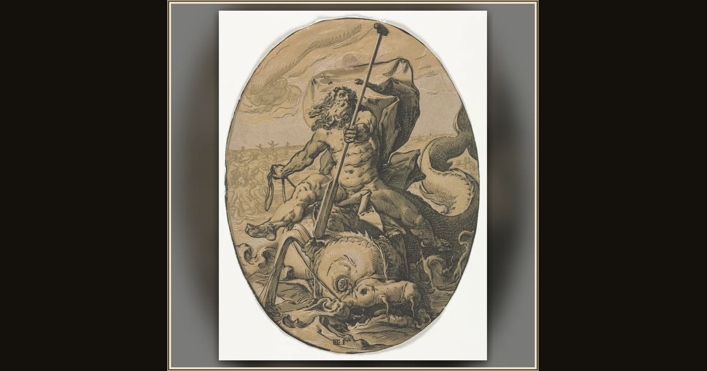

The Deities: Oceanus
Hendrick Goltzius (Dutch, 1558–1617) · 1588–90 · cma
Oceanus rides a sea creature, grasping a strap in one hand; in the play he reaches Prometheus on a winged bird that he guides without a bridle (286). Explore its place in Aeschylus's Plays, Prometheus Bound, line 292.